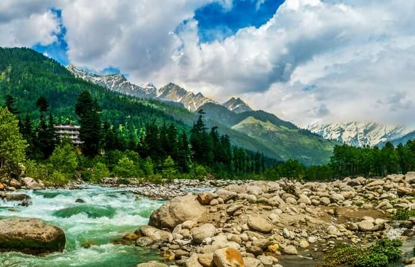
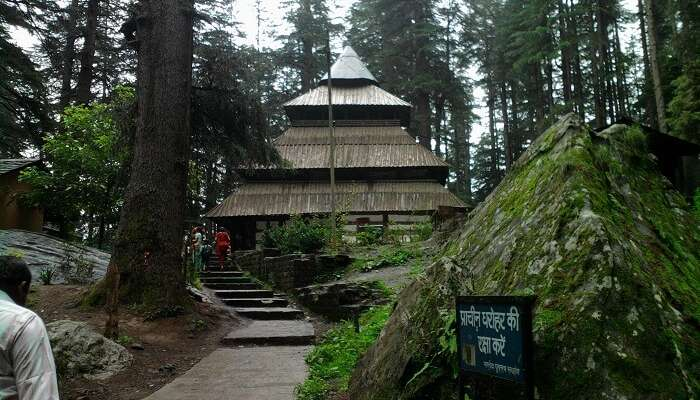
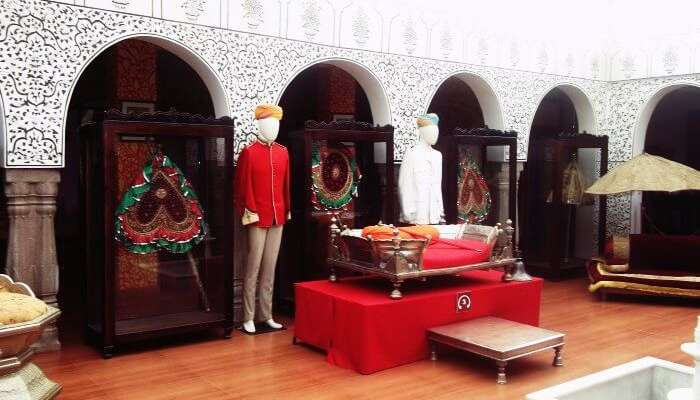
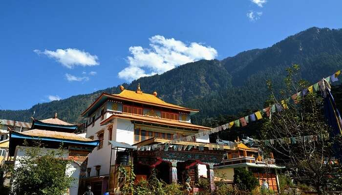
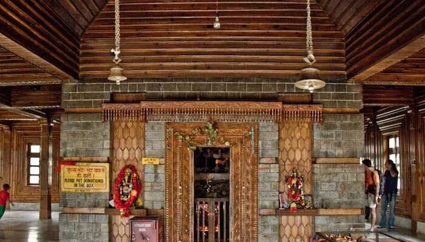
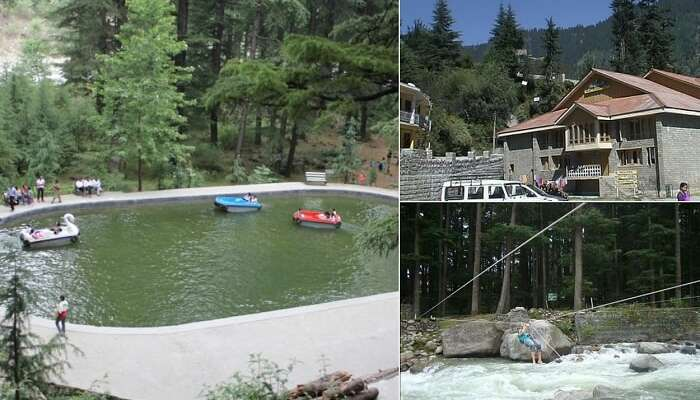
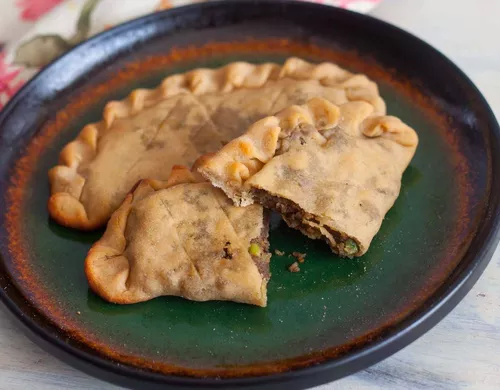
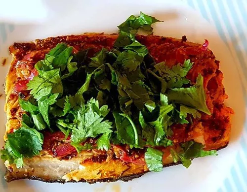

MANALI
Manali is a town in the Indian state of Himachal Pradesh. It is situated in the northern end of the Kullu Valley, formed by the Beas River. The town is located in the Kullu district, approximately 270 kilometres (170 mi) north of the state capital of Shimla and 544 kilometres (338 mi) northeast of the national capital of Delhi.

Best Places to visit:-
1. Hadimba Temple:-

Hadimba Temple is one of the top places to visit in Manali. This beautiful temple said to be dedicated to Hadimba – the wife of Pandu son Bhima, is one of the best tourist places in Manali. The most striking feature of this temple is that it is located in the Dhungri Forest and is surrounded by pine trees.
2. Museum Of Himachal Culture And Folk Art:-
A stone’s throw from the Hadimba Temple, the Museum of Himachal Culture and Folk Art allows a walk through time and is a vital part of Manali sightseeing. It houses a unique collection of unknown antiques including religious relics, household objects, weapons, instruments, and scale models, among many other things.
3. Tibetan Monasteries:-

Manali also boasts of respectable Tibetan population settlement and it is one of the essential Manali travel tips not to miss out on this one. And you must include at least one of them if you are shortlisting the places to visit in Manali in 2 days.
4. Manu Temple:-
Nearly 3 km away from the famous Mall Road of Manali, the famous Manu Temple is among the frequently visited tourist places in Manali. Dedicated to Lord Manu, the temple’s premises offer a sense of peace and serenity to the devotees walking in as it is one of the best tourist places in Manali.
5.Club House:-

This is one of the most interesting places to visit in old Manali. The Club House is also one of the tourist places in Manali for adventure activities and indoor games. Located adjacent to the Manalsu Nallah, it has been constructed in the British style of architecture and is managed by Himachal Pradesh Tourism Development Corporation (HPTDC).
Must try Dishes:-
1. Sidu:-

This is a local dish that you must have when in Manali. Sidu is the ideal companion for mutton and other non-veg preparations in India. It is prepared using the bread dough.A great restaurent to visit . Have a visit there . No 1 restraurent of agra with best facilities , and a lot variety of food.
2. Babru:-
This dish falls in the family of kachoris which is a crispy Indian snack. Alike kachoris, this too is made by using a paste of soaked black gram and then kneading it into a dough.A great restaurent to visit . Have a visit there . No 1 restraurent of agra with best facilities , and a lot variety of food.
3. Kullu Trout:-

The Kulu Trout is a treat for any fish lover. This dish uses marinated fish and is slowly cooked. It is quite healthy unlike most of the other street foods and is low in calories as well.A great restaurent to visit . Have a visit there . No 1 restraurent of agra with best facilities , and a lot variety of food.
Must visit Restaurants:-
1. Pumpkin Tales:-

Authentic Goan curries made with home-made masala and traditional recepies.
and Portuguese inspired dishes espically famous for its 11 layered Pancake.
A great restaurent to visit . Have a visit there . No 1 restraurent of agra with best facilities , and a lot variety of food.
2. Amelies Cafe and Creamery:-
This restaurant has a no-fuss rustic charm offering a variety of seafood and many moreand Portuguese inspired dishes espically famous for its 11 layered Pancake.
A great restaurent to visit . Have a visit there . No 1 restraurent of agra with best facilities , and a lot variety of food.

3.Absolute Barbecue:-

A hundred and fifty year old ancestral home converted into a restaurant, serves a variety of Goan
and Portuguese inspired dishes espically famous for its 11 layered Pancake.
A great restaurent to visit . Have a visit there . No 1 restraurent of agra with best facilities , and a lot variety of food.